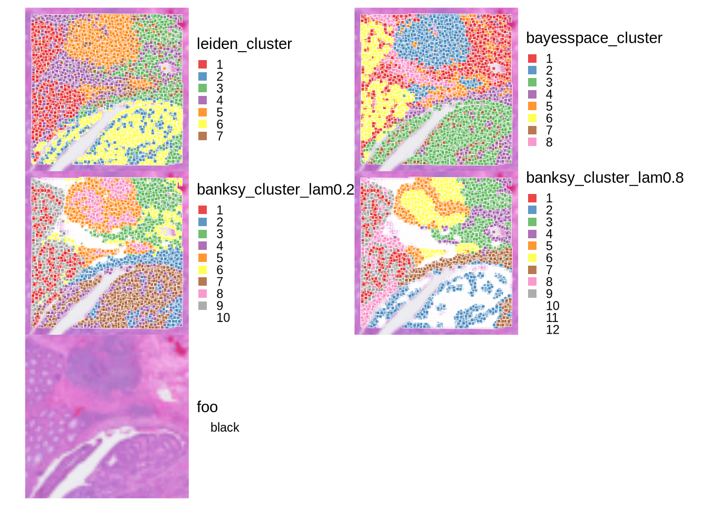
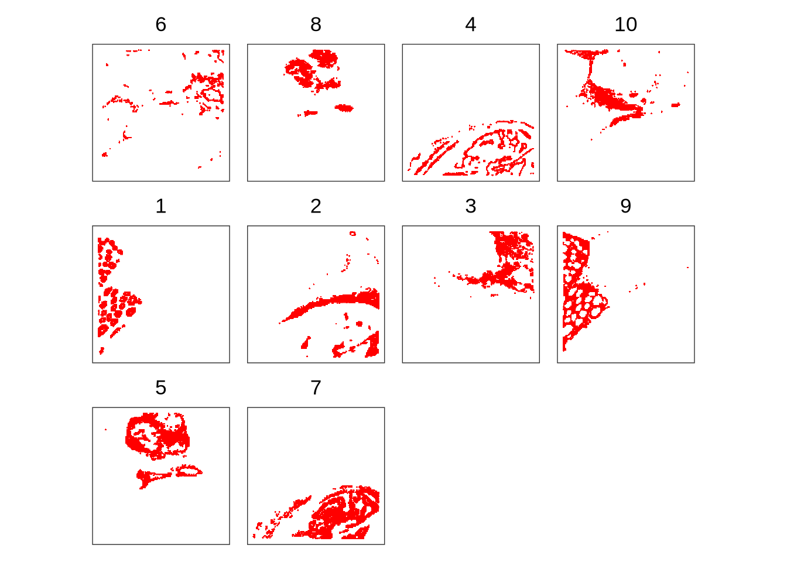

![]()
library(Banksy)
library(igraph)
library(ggspavis)
library(BayesSpace)
library(nnSVG)
library(HDF5Array)
library(patchwork)
library(SpatialExperiment)
library(scran)
library(scater)
library(scrapper)
library(SingleR)
library(qs2)
library(viridis)
library(RColorBrewer)
library(pheatmap)4. Clustering and Annotation
Load packages
Load Data
visium_data_path <- file.path(data_path, "raw_colon_cancer")
hdf_data_path <- file.path(data_path, "hdf5_colon_cancer")spe <- loadHDF5SummarizedExperiment(
dir = hdf_data_path,
prefix = "03_processed_"
)Clustering
Non-spatially aware clustering
Leiden Clustering
The simplest way to cluster the spots is to use the same methods as in scRNA-seq analysis. Here, we use the Leiden clustering algorithm on the PCs obtained from standard PCA. We use the scran::buildSNNGraph() function to build a shared nearest neighbor (SNN) graph based on the Jaccard similarity of the k-nearest neighbors in PCA space. We then apply the Leiden algorithm using igraph::cluster_leiden() function to identify clusters of spots.
# Build shared nearest neighbor (SNN) graph
snn_graph <- buildSNNGraph(spe, use.dimred = "PCA", type="jaccard", k = 20)
# Cluster using the Leiden algorithm
leiden_cluster <- cluster_leiden(snn_graph, objective_function="modularity", resolution = 0.6)
# Add cluster labels to colData
spe$leiden_cluster <- factor(leiden_cluster$membership)
table(spe$leiden_cluster)
1 2 3 4 5 6 7
1834 1167 1778 2356 2187 2200 1093 Spatially aware clustering
For spatial transcriptomics, we can also incorporate spatial information into the clustering process. Here, we will use two methods: BayesSpace and BANKSY.
Clustering with BayesSpace
BayesSpace uses a Bayesian statistical model to cluster spots based on both gene expression and spatial location.
# Prepare data for 'BayesSpace'. We skip PCA here as we have already computed PCs.
spe <- spatialPreprocess(spe, skip.PCA=TRUE)
# Perform spatial clustering with 'BayesSpace' using 'd=10' PCs and targeting 'q=8' clusters
spe <- spatialCluster(spe, q=8, d=10, nrep=1e3, burn.in=100)
# Add BayesSpace cluster labels to colData
spe$bayesspace_cluster <- factor(spe$spatial.cluster)
table(spe$bayesspace_cluster)
1 2 3 4 5 6 7 8
2547 2356 2599 1036 1030 1727 531 789 Clustering with BANKSY
Since we have already computed spatially-aware PCs using BANKSY, we can use these PCs to build an SNN graph and perform clustering using the Leiden algorithm. We will use the PCs obtained from BANKSY with λ = 0.2 or 0.8 for clustering.
# Build shared nearest neighbor (SNN) graph
snn_graph_banksy_lam0.2 <- buildSNNGraph(spe, use.dimred = "PCA_banksy_lam0.2", type="jaccard", k = 20)
snn_graph_banksy_lam0.8 <- buildSNNGraph(spe, use.dimred = "PCA_banksy_lam0.8", type="jaccard", k = 20)
# Cluster using the Leiden algorithm
banksy_cluster_lam0.2 <- cluster_leiden(snn_graph_banksy_lam0.2, objective_function="modularity", resolution = 0.6)
banksy_cluster_lam0.8 <- cluster_leiden(snn_graph_banksy_lam0.8, objective_function="modularity", resolution = 0.6)
# Add cluster labels to colData
spe$banksy_cluster_lam0.2 <- factor(banksy_cluster_lam0.2$membership)
spe$banksy_cluster_lam0.8 <- factor(banksy_cluster_lam0.8$membership)
table(spe$banksy_cluster_lam0.2)
1 2 3 4 5 6 7 8 9 10
1092 1183 1290 1037 1662 643 2083 989 1552 1084 table(spe$banksy_cluster_lam0.8)
1 2 3 4 5 6 7 8 9 10 11 12
933 1310 1313 667 1004 1398 873 734 1118 965 1091 1209 Visualization of the different clustering results
ks <- c("leiden_cluster", "bayesspace_cluster", "banksy_cluster_lam0.2", "banksy_cluster_lam0.8")
# Plot spatial distribution of clusters for each method
plots <- c(lapply(ks, \(.) {
plt <- plotVisium(spe, annotate=., zoom = T, point_shape = 22, point_size = 1)
plt
}) ,
plotVisium(spe, zoom = T, spots=FALSE )) # add a plot of the tissue without spots
# combine plots
plots |> wrap_plots(ncol=2) &
scale_fill_brewer(palette = "Set1") &
theme(legend.key.size=unit(0, "lines"), legend.justification="left")
We can appreciate that all methods capture major tissue structures. The borders of the clusters from BANKSY with λ = 0.8 appear to be more “smoothened out”. This is expected as higher λ values give more weight to spatial information.
It may be helpful to visualize individual clusters to see the spatial patterns more clearly. Here, we see the clusters obtained from BANKSY with λ = 0.2.
# plot selected clusters in order of frequency,
cluster_col <- "banksy_cluster_lam0.2"
# highlighting cells assigned to cluster 'k'
lapply(tail(names(sort(table(spe[[cluster_col]]))), length(levels(spe[[cluster_col]]))), \(k) {
spe$foo <- spe[[cluster_col]] == k
spe <- spe[, order(spe$foo)]
plt <- plotCoords(spe, annotate="foo")
plt$layers[[1]]$aes_params$stroke <- 0
plt$layers[[1]]$aes_params$size <- 0.5
plt + ggtitle(k)
}) |>
wrap_plots(nrow=3) &
scale_color_manual(values=c("white", "red")) &
theme(plot.title=element_text(hjust=0.5), legend.position="none")
Annotation
Save the processed data
saveHDF5SummarizedExperiment(
spe,
dir = hdf_data_path,
prefix = "04_clustered_",
replace = TRUE,
chunkdim = NULL,
level = NULL,
as.sparse = NA,
verbose = NA
)
Expand for Session Info
sessionInfo()R version 4.5.2 (2025-10-31)
Platform: x86_64-conda-linux-gnu
Running under: Ubuntu 22.04.4 LTS
Matrix products: default
BLAS/LAPACK: /home/kim/workspace/spatial_transcriptomics/.pixi/envs/default/lib/libopenblasp-r0.3.30.so; LAPACK version 3.12.0
locale:
[1] LC_CTYPE=en_US.UTF-8 LC_NUMERIC=C
[3] LC_TIME=de_CH.UTF-8 LC_COLLATE=en_US.UTF-8
[5] LC_MONETARY=de_CH.UTF-8 LC_MESSAGES=en_US.UTF-8
[7] LC_PAPER=de_CH.UTF-8 LC_NAME=C
[9] LC_ADDRESS=C LC_TELEPHONE=C
[11] LC_MEASUREMENT=de_CH.UTF-8 LC_IDENTIFICATION=C
time zone: Europe/Zurich
tzcode source: system (glibc)
attached base packages:
[1] stats4 stats graphics grDevices utils datasets methods
[8] base
other attached packages:
[1] pheatmap_1.0.13 RColorBrewer_1.1-3
[3] viridis_0.6.5 viridisLite_0.4.2
[5] qs2_0.1.5 SingleR_2.12.0
[7] scrapper_1.4.0 scater_1.38.0
[9] scran_1.38.0 scuttle_1.20.0
[11] SpatialExperiment_1.20.0 patchwork_1.3.2
[13] HDF5Array_1.38.0 h5mread_1.2.0
[15] rhdf5_2.54.0 DelayedArray_0.36.0
[17] SparseArray_1.10.0 S4Arrays_1.10.0
[19] abind_1.4-8 Matrix_1.7-3
[21] nnSVG_1.14.0 BayesSpace_1.20.0
[23] SingleCellExperiment_1.32.0 SummarizedExperiment_1.40.0
[25] Biobase_2.70.0 GenomicRanges_1.62.0
[27] Seqinfo_1.0.0 IRanges_2.44.0
[29] S4Vectors_0.48.0 BiocGenerics_0.56.0
[31] generics_0.1.4 MatrixGenerics_1.22.0
[33] matrixStats_1.5.0 ggspavis_1.16.0
[35] ggplot2_4.0.0 igraph_2.2.1
[37] Banksy_1.6.0
loaded via a namespace (and not attached):
[1] jsonlite_2.0.0 magrittr_2.0.4
[3] ggbeeswarm_0.7.2 magick_2.9.0
[5] DirichletReg_0.7-2 farver_2.1.2
[7] rmarkdown_2.30 vctrs_0.6.5
[9] DelayedMatrixStats_1.32.0 memoise_2.0.1
[11] RCurl_1.98-1.17 htmltools_0.5.8.1
[13] curl_7.0.0 BiocNeighbors_2.4.0
[15] xgboost_1.7.11.1 Rhdf5lib_1.32.0
[17] Formula_1.2-5 htmlwidgets_1.6.4
[19] sandwich_3.1-1 httr2_1.2.1
[21] zoo_1.8-14 cachem_1.1.0
[23] lifecycle_1.0.4 ggside_0.4.0
[25] pkgconfig_2.0.3 rsvd_1.0.5
[27] R6_2.6.1 fastmap_1.2.0
[29] aricode_1.0.3 digest_0.6.37
[31] miscTools_0.6-28 dqrng_0.4.1
[33] irlba_2.3.5.1 RSQLite_2.4.3
[35] beachmat_2.26.0 labeling_0.4.3
[37] filelock_1.0.3 sccore_1.0.6
[39] compiler_4.5.2 microbenchmark_1.5.0
[41] BRISC_1.0.6 bit64_4.6.0-1
[43] withr_3.0.2 S7_0.2.0
[45] BiocParallel_1.44.0 DBI_1.2.3
[47] rappdirs_0.3.3 rjson_0.2.23
[49] bluster_1.20.0 rdist_0.0.5
[51] tools_4.5.2 vipor_0.4.7
[53] beeswarm_0.4.0 glue_1.8.0
[55] dbscan_1.2.3 rhdf5filters_1.22.0
[57] grid_4.5.2 cluster_2.1.8.1
[59] gtable_0.3.6 tidyr_1.3.1
[61] data.table_1.17.8 stringfish_0.17.0
[63] BiocSingular_1.26.0 ScaledMatrix_1.18.0
[65] metapod_1.18.0 XVector_0.50.0
[67] ggrepel_0.9.6 RANN_2.6.2
[69] pillar_1.11.1 limma_3.66.0
[71] RcppHungarian_0.3 dplyr_1.1.4
[73] BiocFileCache_3.0.0 lattice_0.22-7
[75] bit_4.6.0 tidyselect_1.2.1
[77] locfit_1.5-9.12 pbapply_1.7-4
[79] knitr_1.50 gridExtra_2.3
[81] edgeR_4.8.0 xfun_0.53
[83] statmod_1.5.1 yaml_2.3.10
[85] evaluate_1.0.5 codetools_0.2-20
[87] tibble_3.3.0 cli_3.6.5
[89] RcppParallel_5.1.11-1 uwot_0.2.3
[91] arrow_22.0.0 leidenAlg_1.1.5
[93] dichromat_2.0-0.1 Rcpp_1.1.0
[95] dbplyr_2.5.1 coda_0.19-4.1
[97] parallel_4.5.2 assertthat_0.2.1
[99] blob_1.2.4 mclust_6.1.1
[101] sparseMatrixStats_1.22.0 bitops_1.0-9
[103] scales_1.4.0 purrr_1.1.0
[105] maxLik_1.5-2.1 rlang_1.1.6 Citation
BibTeX citation:
@online{kim2025,
author = {Kim, Youngjun},
title = {Spatial {Transcriptomics} {Data} {Analysis} {Tutorial} 04:
{Clustering}},
date = {2025-12-21},
url = {https://yjkim93.github.io/posts/2025-12-21-spatial-transcriptomics-04-clustering/},
langid = {en}
}
For attribution, please cite this work as:
Kim, Youngjun. 2025. “Spatial Transcriptomics Data Analysis
Tutorial 04: Clustering.” December 21, 2025. https://yjkim93.github.io/posts/2025-12-21-spatial-transcriptomics-04-clustering/.